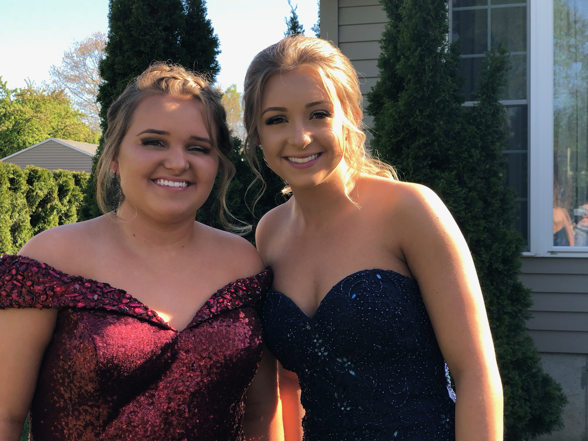

This is my twin sister Kassi, she is 19 years old and a freshman at Husson University. She is currently living in the dorms at husson and works at the Brewer Hannaford in her spare time. You can see that we are fraternal twins but very much a like. We both had the same friend group growing up, and even played the same sports. We were inseparable and best friends. Kassi and I have our differences though...Kassi enjoys different things then me, like watching sports live and on tv, she enjoys playing video games, and is at times antisocial and likes her quiet time. My sister is attending Husson University in hopes to one day become a nurse following in the footsteps of my parents. She also graduated from Brewer High school in 2018 and has always been a caring person who will do anything to help people. Her heart is bigger than the world.
My Sister!